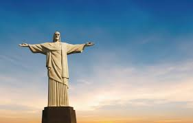
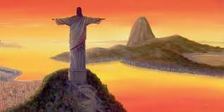

Sobre o Monumento
O Cristo Redentor é um dos mais icônicos monumentos do mundo, localizado no topo do Morro do Corcovado, no Rio de Janeiro. Inaugurado em 1931, ele representa a fé e a hospitalidade do povo brasileiro. Com 38 metros de altura e de braços abertos, abraça a cidade maravilhosa de forma simbólica.
Localização
Endereço: Parque Nacional da Tijuca - Alto da Boa Vista, Rio de Janeiro - RJ, Brasil
Coordenadas GPS: -22.9519, -43.2105
Valores
| Tipo de Bilhete | Preço |
|---|---|
| Adulto | R$ 90,00 |
| Crianças (6 a 11 anos) | R$ 45,00 |
| Idosos (a partir de 60 anos) | R$ 45,00 |
Como Chegar
O acesso ao Cristo pode ser feito de trem, van oficial ou trilha. O Trem do Corcovado é a forma mais tradicional e oferece uma vista inesquecível da cidade.
Pontos Turísticos Vizinhos
- Pão de Açúcar
- Jardim Botânico
- Lagoa Rodrigo de Freitas
- Praia de Copacabana
Curiosidades
- O monumento é considerado uma das Sete Maravilhas do Mundo Moderno.
- A construção durou cerca de 5 anos.
- Foi projetado por engenheiros brasileiros e o escultor francês Paul Landowski.
Galeria de Fotos
 